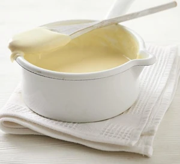

White Sauce

Description
Every home cook needs a good béchamel in their repertoire.
This recipe will teach you how to make a roux and keep your sauce lump-free.
Ingredients
- 500ml whole milk
- 1 onion (halved)
- 1 bay leaf
- 2 cloves
- 50g butter
- 50g plain flour
Steps
- Bring he milk to the boil in a small saucepan with the onion, bay leaf, and cloves. Turn off the heat and leave to infuse for 20 mins.
- Melt the butter in another saucepan, then add the plain flour. Stir continuously until a paste forms - this is called a roux.
- Continue cooking for 2 mins.
- Remove the onion, bay leaves, and cloves from the milk with a slotted spoon and discard.
- Add the infused milk to the roux gradually, stirring as you go, until you get a smooth sauce
- Cook for 5-10 mins, stirring continuously, until the sauce has thickened. Season to taste.